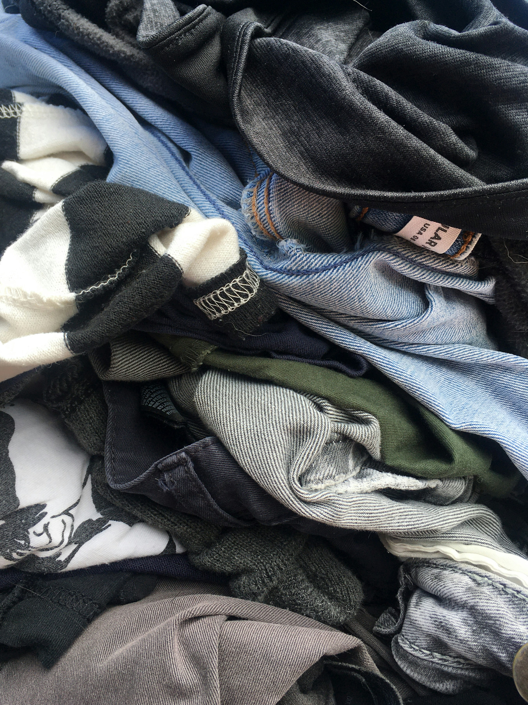
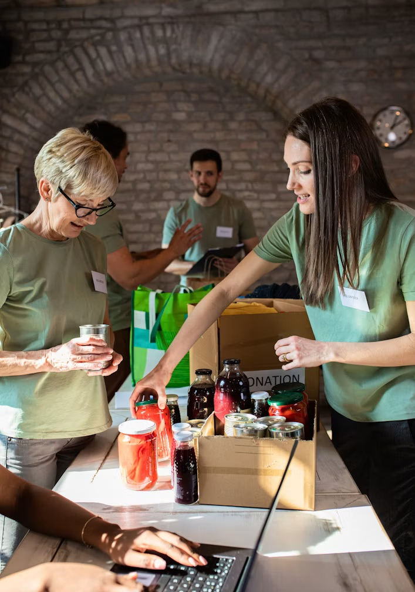
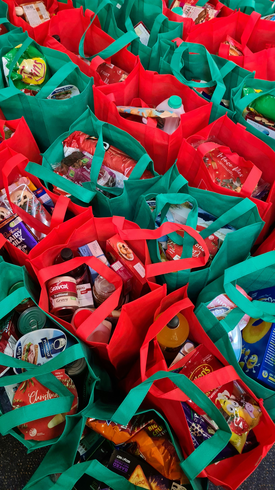

Ropa y Calzado
Prendas y calzado de temporada en buen estado para adultos, jóvenes y niños. Todas las donaciones pasan un triaje riguroso de limpieza y conservación.
Somos una asociación sin ánimo de lucro dedicada a la recogida, triaje y distribución equitativa de ropa, calzado y productos de higiene en Otxarkoaga-Txurdinaga. Conectamos los excedentes de vecinos y comercios locales con quienes más los necesitan a través de una gestión digital transparente.
Clasificamos y preparamos las aportaciones ciudadanas y comerciales para ofrecer una respuesta digna y eficaz.

Prendas y calzado de temporada en buen estado para adultos, jóvenes y niños. Todas las donaciones pasan un triaje riguroso de limpieza y conservación.

Artículos de primera necesidad precintados y sin abrir: jabón, champú, cepillos y pasta dental, compresas y pañales para familias con bebés.

Conectamos la solidaridad entre vecinos y comercios de barrio sin intermediación burocrática pesada y con total respeto a la dignidad familiar.
Nuestro modelo garantiza que cada recurso donado llegue rápidamente y con trazabilidad a quien lo requiere: